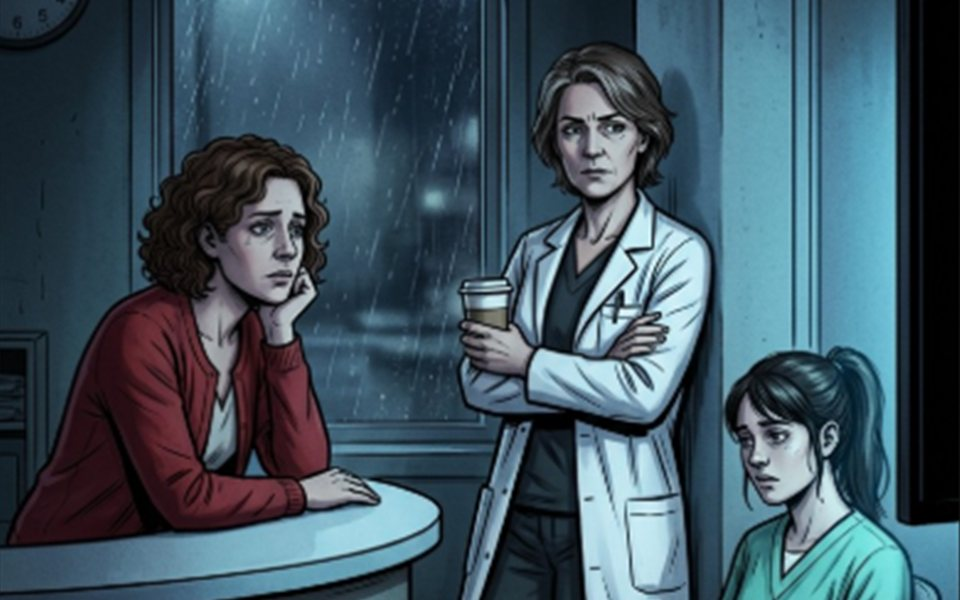
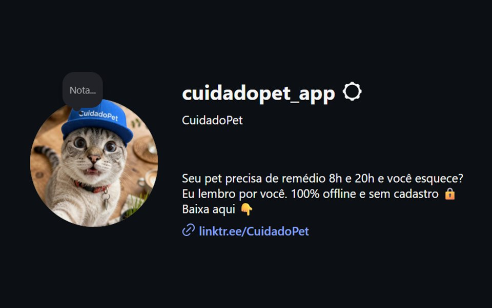
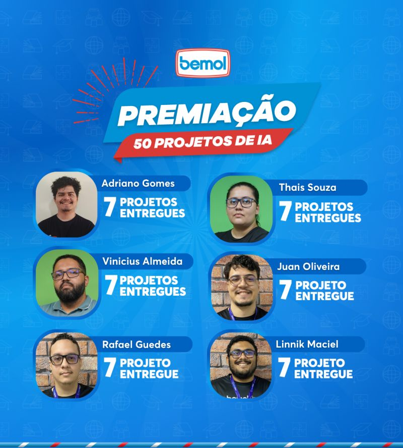

App Android
App Android
CuidadoPet
Rotina de saúde do pet no celular: remédios, vacinas, refeições e água. Publicado na Play Store.
- Kotlin
- Android
- Offline
App Android
Rotina de saúde do pet no celular: remédios, vacinas, refeições e água. Publicado na Play Store.
 Jogo · jogável aqui
Jogo · jogável aqui
Jogo 2D de ação em pixel art. Enfrente ogro, bruxa e lobisomem direto no navegador.

IA · vídeoTransforma cenas escritas em vídeos verticais narrados, com imagens e voz geradas por IA.

Conteúdo · InstagramHistórias em vídeo e divulgação do app, feitas com o Estúdio de Histórias.

Bemol Digital7 projetos premiados entre cerca de 200 da campanha de IA da empresa.
Ver detalhes → Bemol Digital
Bemol Digital
9º lugar com o Agente de Suporte N3, um chatbot para os processos internos.
Ver detalhes → Hackathon
Hackathon
2º Lugar e Menção Honrosa com um projeto que automatiza a criação de casos no Salesforce.
Ver detalhes → Salesforce
Salesforce
Primeira Ranger e primeira Double Star Ranger da Bemol Digital.
Ver detalhes →